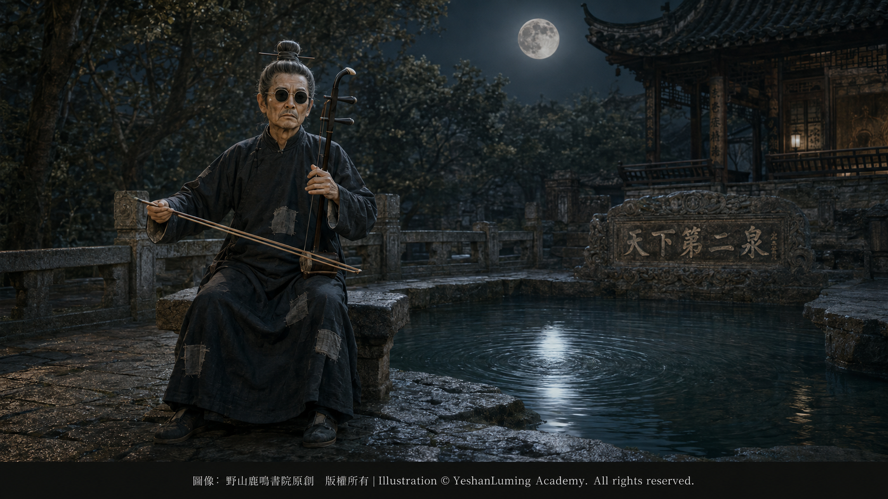

不甘就此沉淪·苦難淬煉大師Unwilling to Sink Any Further · A Master Tempered by Suffering
China’s Beethoven · Blind Musician AbingUnwilling to Sink Any Further · A Master Tempered by Suffering
China’s Beethoven · Blind Musician Abing不甘就此沉淪·苦難淬煉大師
中國的貝多芬·瞎子阿炳
中國的貝多芬·瞎子阿炳（107）China’s Beethoven · Blind Musician Abing (107)
一個音樂天才，因為遭受命運與社會的不公，產生強烈的逆反心理，試圖用放縱自己來報復社會，最後卻幾乎毀滅了自己。
他從一個年輕有為、英俊挺拔、受人追捧、受人尊敬、生活優裕的雷尊殿當家道士，變成了一個什麼都看不見的盲人，只能依靠街頭賣藝勉強維生。
這樣的人，豈止可憐、可悲，甚至可恨。恨他自甘墮落，恨鐵不成鋼——眼看一個天才親手毀掉了自己。
如果故事就到這裡結束，那也沒有什麼特別之處。華彥鈞，也就是後來的瞎子阿炳，不過是那個苦難時代眾多悲劇人物中的一個：一個因為年少無知，企圖以自暴自棄報復社會，卻在別人的引誘和自己的放縱中毀掉前途的天才；一個從雷尊殿當家道士的位置上，跌落到社會最底層的失敗者。
但是，真正讓阿炳與眾不同的，不是他曾經墮落，而是他在墮落之後，並沒有完全放棄自己，沒有就此徹底沉淪。
他開始走上街頭拉琴賣藝，求人賞賜幾個銅板，只為不被餓死。與他當年隨意揮霍的金錢相比，這幾個銅板是那麼微不足道，卻是他為了活下去真正需要的救命錢。
這不是為了追求藝術的昇華，更不是為了創作什麼傳世名曲，而只是為了活下去。只有拉琴，才能換來一點微薄的收入，才能讓自己和後來的妻子董催弟不至於挨餓。
但是，在日復一日的苦難和煎熬中，在無錫街頭的風霜雨雪裡，這個不甘就此沉淪的人，開始嘗試用音樂表達自己的感受，傾訴自己的感情和心聲。這是他始料未及的變化，也不是他刻意追求的結果。
一個音樂天才，因為遭受命運與社會的不公，產生強烈的逆反心理，試圖用放縱自己來報復社會，最後卻幾乎毀滅了自己。
他從一個年輕有為、英俊挺拔、受人追捧、受人尊敬、生活優裕的雷尊殿當家道士，變成了一個什麼都看不見的盲人，只能依靠街頭賣藝勉強維生。
這樣的人，豈止可憐、可悲，甚至可恨。恨他自甘墮落，恨鐵不成鋼——眼看一個天才親手毀掉了自己。
如果故事就到這裡結束，那也沒有什麼特別之處。華彥鈞，也就是後來的瞎子阿炳，不過是那個苦難時代眾多悲劇人物中的一個：一個因為年少無知，企圖以自暴自棄報復社會，卻在別人的引誘和自己的放縱中毀掉前途的天才；一個從雷尊殿當家道士的位置上，跌落到社會最底層的失敗者。
但是，真正讓阿炳與眾不同的，不是他曾經墮落，而是他在墮落之後，並沒有完全放棄自己，沒有就此徹底沉淪。
他開始走上街頭拉琴賣藝，求人賞賜幾個銅板，只為不被餓死。與他當年隨意揮霍的金錢相比，這幾個銅板是那麼微不足道，卻是他為了活下去真正需要的救命錢。
這不是為了追求藝術的昇華，更不是為了創作什麼傳世名曲，而只是為了活下去。只有拉琴，才能換來一點微薄的收入，才能讓自己和後來的妻子董催弟不至於挨餓。
但是，在日復一日的苦難和煎熬中，在無錫街頭的風霜雨雪裡，這個不甘就此沉淪的人，開始嘗試用音樂表達自己的感受，傾訴自己的感情和心聲。這是他始料未及的變化，也不是他刻意追求的結果。
隨著時間的推移，他在街頭演奏的二胡、琵琶樂曲慢慢發生了微妙的變化，甚至連他自己都未必覺察得到。那已經不再只是他從前在道觀作法事時演奏的傳統道教科儀音樂，而逐漸變成他對現實生活、人生苦難和個人命運深刻感受的自然流露。
他的樂曲裡充滿了悲哀、苦難與不甘。他用音樂極其準確地表現自己的生活處境：吃不飽飯的日子，無人理會的冷落，看不見前途的悲哀，以及一個被命運逼到絕境的人，從內心深處發出的悲憤吶喊。
阿炳的許多樂曲，最初沒有寫成樂譜，也沒有固定的名稱。它們不是保存在紙上，而是存在他的記憶裡、手指上，也存在他全部的生命經驗之中。
他的演奏也不是對固定樂譜的機械重複。他會根據當時的處境和心境，在相對穩定的旋律骨架上即興發揮。因此，每一次演奏都可能出現細微而真實的變化，一點一點融入他對現實、對前途、對命運的最新感受。
阿炳不是先在紙上完成作品，再按照樂譜演奏。他的創作與演奏，本來就是同一個過程。他既是作曲者，也是演奏者。每一次演奏，都是對自己內心的一次重新審視，也是對作品的一次重新創造。
久而久之，阿炳的音樂形成了一種獨特的風格。他的音樂裡，有對生活苦難的不甘，有對世態炎涼的無奈，也有對人間不平的憤懣。
他的音樂讓人感到悲，感到苦，感到絕望，感到不安；可是，在這種悲哀和絕望之中，又隱隱存在著一種難以言說的掙扎，一種不肯倒下、仍然力圖向上的力量。
阿炳演奏的樂曲，特別是他的二胡樂曲，逐漸產生了一種難以形容的魔力和感染力。那是一種能夠滲透人心的力量，讓人聽過之後，不知不覺沉浸其中，難以自拔。
他的音樂開始自成一體，沒有人能夠真正重複，也很難有人完全學會。因為，如果沒有他那樣的人生經歷——從天堂跌入地獄，從受人追捧到無人問津，從衣食無憂到飢飽無定——就很難創作出那樣的音樂，更難演奏出那種直抵人心的聲音。
如果說，華彥鈞原本就是一個音樂天才，在師父，也是父親華清和的嚴格訓練下，年紀輕輕就成為出人頭地、受人追捧的「小天師」，那麼，長年在街頭奔走賣藝的生活，則讓他的音樂經受了苦難的淬煉。苦難沒有造就他的天才，卻把這個天才淬煉成了一位無人能夠複製的民間音樂大師。
在長年奔走於無錫街巷、依靠賣藝謀生的歲月裡，阿炳更加廣泛地接觸到江南小調、地方戲曲、絲竹和鑼鼓。這些同樣充滿民間生命力的音樂，與他早年掌握的道教音樂相互交融，為他形成自己獨特的音樂風格注入了新的血液。
現在的華彥鈞，已經不再是道觀裡的樂師，不再是那個英俊瀟灑的小天師，也不再是受人追捧的華當家。他成了一個流落街頭、雙目失明的藝術家，當然，也是一個窮困潦倒的藝術家。
他不再為道教科儀演奏，不再用音樂為別人的法事服務，而是開始用音樂表現自己的內心，用音樂向聽眾展示一個盲人、一個失敗者、一個在苦難中掙扎之人的真實感受。
從那以後，沒有人再稱他「小天師」，也沒有人再叫他「華當家」。人們開始親切地，卻又略帶嘲諷地，叫他「瞎子阿炳」。他的真名華彥鈞，反而漸漸被人遺忘，幾乎沒有人知道了。
阿炳的音樂，是在長時間的苦難中一步一步沉澱、一步一步昇華的。苦難把他從一個幾乎自我毀滅的落難者，淬煉成了一位無人能夠取代的民間音樂大師。雖然連他自己都沒有意識到，他的音樂已經達到了怎樣的高度。
就像碳元素在地底深處經受高溫、高壓，經過漫長歲月的孕育，最終形成自然界最堅硬的物質——鑽石；二十幾年的街頭苦難生活，也把阿炳淬煉成了一位無可替代的民間音樂大師。這樣的大師，不是任何高等音樂學府都能培養出來的。
音樂學院可以教授演奏技巧、音樂理論和作曲方法，卻無法複製阿炳所經歷的人生。沒有那種從天堂跌入地獄，又從深淵中艱難爬起來的生命體驗，就很難真正理解他的音樂為什麼會具有如此震撼人心的力量。
阿炳的人生是破碎的，也曾經是不體面的，甚至帶有無法洗去的污點。他的生活曾經有過短暫的美好，但很快便跌入谷底，墜入深淵。然而，不甘就此沉淪的他，又靠著自己的力量，從谷底、從深淵之中，一點一點地爬了起來。苦難淬煉了他的音樂才華，也讓他逐漸成為一代民間音樂大師。

Click to enlarge
用音樂表現生活，用琴弦傾訴心靈，成為阿炳音樂最深厚的底蘊。在這樣的背景之下，《二泉映月》《聽松》《寒春風曲》等不朽樂曲，逐漸在阿炳的琴弦上形成。它們最初沒有寫在紙上，而是存在阿炳的記憶、手指和生命之中。
每一次拉琴，都是一次重新感受，也是對樂曲的一次重新淬煉。就像鋼鐵經過一次又一次淬火和鍛打，阿炳的音樂也在無數次街頭演奏中，不斷錘煉，不斷變化，最終昇華到了難以企及的境界。
阿炳的音樂沒有刻意炫耀技巧，也不以華麗取勝。旋律從一個樸素的主題慢慢展開，反覆、變化、推進，像水一樣，一波一波流向遠方。聽的人會覺得，這不是在表演，而是在傾訴；不是說給某一個人聽，而是說給自己，也說給所有在苦難中掙扎的人聽。
有人說，阿炳的音樂像月光，像泉水。其實，它更像命運的回聲和靈魂的拷問。裡面有悲哀，有憤怒，有不甘，也有經歷一切之後的沉靜。這種沉靜，不是因為苦難已經消失，而是因為所有的苦難，都已經被他熔化在音樂之中。
阿炳沒有徹底沉淪。他終於從一個令人惋惜的墮落天才，變成了一位無人能夠取代的民間音樂大師。
（未完待續）
A musical genius, embittered by the injustices inflicted upon him by fate and society, developed a powerful impulse to rebel. He tried to take revenge on society by surrendering himself to a life of reckless indulgence, only to come perilously close to destroying himself.
Once a promising, handsome, and commanding young man—admired and respected by many, comfortably situated as the head Taoist priest of Leizun Temple—he became a blind man who could see nothing and could survive only by performing in the streets.
Such a man was not merely pitiful or tragic; he could even provoke anger. One could hate him for abandoning himself to degradation, and grieve over his wasted promise—the anguish of watching a genius destroy himself with his own hands.
Had his story ended there, it would have been nothing extraordinary. Hua Yanjun, later known as Blind Abing, would have been merely one of the countless tragic figures of that age of suffering: a young and ignorant genius who tried to avenge himself upon society through self-destruction, only to ruin his future under the influence of others and through his own excesses; a failure who fell from his position as the head Taoist priest of Leizun Temple to the very bottom of society.
What truly distinguished Abing, however, was not that he had once fallen, but that after his fall, he did not completely give up on himself. He refused to sink irretrievably into the depths.
He began performing music in the streets, hoping that passersby would spare him a few copper coins so that he would not starve to death. Compared with the money he had once squandered so carelessly, those few coins were almost nothing. Yet now they were the money upon which his very survival depended.
He was not seeking artistic transcendence, much less trying to create immortal masterpieces. He was simply trying to stay alive. Only by playing music could he earn a meager income and keep himself—and later his wife, Dong Cuidi—from going hungry.
Yet amid the suffering and torment that returned day after day, and through the wind, frost, rain, and snow of the streets of Wuxi, this man who refused to sink any further began trying to express his experiences through music and to give voice to his feelings and innermost thoughts. It was a transformation he had never anticipated, nor was it an outcome he had deliberately pursued.
A musical genius, embittered by the injustices inflicted upon him by fate and society, developed a powerful impulse to rebel. He tried to take revenge on society by surrendering himself to a life of reckless indulgence, only to come perilously close to destroying himself.
Once a promising, handsome, and commanding young man—admired and respected by many, comfortably situated as the head Taoist priest of Leizun Temple—he became a blind man who could see nothing and could survive only by performing in the streets.
Such a man was not merely pitiful or tragic; he could even provoke anger. One could hate him for abandoning himself to degradation, and grieve over his wasted promise—the anguish of watching a genius destroy himself with his own hands.
Had his story ended there, it would have been nothing extraordinary. Hua Yanjun, later known as Blind Abing, would have been merely one of the countless tragic figures of that age of suffering: a young and ignorant genius who tried to avenge himself upon society through self-destruction, only to ruin his future under the influence of others and through his own excesses; a failure who fell from his position as the head Taoist priest of Leizun Temple to the very bottom of society.
What truly distinguished Abing, however, was not that he had once fallen, but that after his fall, he did not completely give up on himself. He refused to sink irretrievably into the depths.
He began performing music in the streets, hoping that passersby would spare him a few copper coins so that he would not starve to death. Compared with the money he had once squandered so carelessly, those few coins were almost nothing. Yet now they were the money upon which his very survival depended.
He was not seeking artistic transcendence, much less trying to create immortal masterpieces. He was simply trying to stay alive. Only by playing music could he earn a meager income and keep himself—and later his wife, Dong Cuidi—from going hungry.
Yet amid the suffering and torment that returned day after day, and through the wind, frost, rain, and snow of the streets of Wuxi, this man who refused to sink any further began trying to express his experiences through music and to give voice to his feelings and innermost thoughts. It was a transformation he had never anticipated, nor was it an outcome he had deliberately pursued.
As time passed, subtle changes gradually entered the erhu and pipa pieces he performed in the streets—changes that even he himself may not have recognized. His music was no longer merely the traditional Taoist ritual music he had once played during religious ceremonies in the temple. It gradually became a natural outpouring of his profound responses to reality, human suffering, and his own fate.
His music was filled with sorrow, suffering, and defiance. Through it, he portrayed his circumstances with extraordinary precision: the days when he did not have enough to eat, the cold indifference of those who ignored him, the despair of being unable to see any future, and the anguished cry rising from the depths of a man driven by fate to the edge of ruin.
Many of Abing’s compositions were not originally written down as scores, nor did they have fixed titles. They were preserved not on paper but in his memory, in his fingers, and in the totality of his lived experience.
Nor were his performances mechanical repetitions of fixed scores. According to his circumstances and state of mind at a particular moment, he would improvise upon a relatively stable melodic framework. Every performance could therefore contain subtle but genuine changes, gradually absorbing his latest responses to reality, the future, and fate.
Abing did not first complete a composition on paper and then perform it according to the written score. For him, composition and performance were part of the same process. He was both composer and performer. Every performance was a fresh examination of his inner life and a new act of creation.
Over time, Abing’s music developed a distinctive style of its own. It carried his refusal to submit to life’s suffering, his helplessness before the coldness and fickleness of the human world, and his indignation at the injustices of society.
His music made people feel sorrow, pain, despair, and unease. Yet beneath that sorrow and despair, one could also sense an inexpressible struggle—a force that refused to collapse and still strove to rise.
The pieces Abing performed, particularly his erhu music, gradually acquired an indescribable power and emotional intensity. His music could penetrate deeply into the human heart, drawing listeners into its world until they became completely absorbed and found it difficult to break free.
His music came to inhabit a world of its own. No one could truly reproduce it, and few could ever fully master it. Without having lived a life like his—falling from heaven into hell, descending from public admiration into complete neglect, and going from a life free of material want to one in which even the next meal was uncertain—it would be difficult to create such music, and more difficult still to produce a sound capable of reaching so directly into the human heart.
Hua Yanjun had always possessed musical genius. Under the rigorous training of his master, who was also his father, Hua Qinghe, he had risen to prominence at a young age and become the widely admired “Young Celestial Master.” But the long years of performing for a living in the streets subjected his music to the tempering force of suffering. Suffering did not create his genius; it forged that genius into an incomparable master of Chinese folk music.
During the many years in which he wandered through the streets and alleys of Wuxi and survived by performing, Abing encountered a far wider range of Jiangnan folk melodies, regional opera, silk-and-bamboo ensembles, and gong-and-drum music. These musical traditions, equally alive with the vitality of ordinary people, mingled with the Taoist music he had mastered in his youth and infused his developing musical style with new lifeblood.
Hua Yanjun was no longer a musician in a Taoist temple. He was no longer the handsome and elegant Young Celestial Master, nor the celebrated Master Hua. He had become a blind artist cast adrift in the streets—and, of course, an artist living in desperate poverty.
He no longer performed for Taoist rituals or used his music in the service of ceremonies conducted for others. Instead, he began using music to express his own inner world and to reveal to his listeners the true feelings of a blind man, a failure, and a human being struggling through suffering.
From then on, no one called him the “Young Celestial Master,” and no one addressed him as “Master Hua.” People began calling him “Blind Abing”—with a certain familiarity, but also a faint undertone of mockery. His real name, Hua Yanjun, gradually faded from memory until almost no one knew it anymore.
Abing’s music settled and rose, step by step, through long years of suffering. Suffering forged him from a fallen man who had nearly destroyed himself into an irreplaceable master of folk music. Yet even he did not realize the heights his music had reached.
Just as carbon deep beneath the earth is subjected to intense heat and pressure and, after being nurtured over immense stretches of time, ultimately becomes diamond—the hardest substance found in nature—more than twenty years of suffering in the streets tempered Abing into an irreplaceable master of folk music. No institution of higher musical learning could have produced a master such as this.
A conservatory can teach performance techniques, music theory, and methods of composition, but it cannot reproduce the life Abing endured. Without the experience of falling from heaven into hell and then painfully struggling upward from the abyss, it is difficult to understand why his music possesses such overwhelming power.
Abing’s life was broken. At times, it was disreputable and marked by stains that could never be erased. His life had briefly known beauty, but it soon plunged to its lowest point and fell into an abyss. Yet unwilling to remain there, he relied upon his own strength to climb upward, inch by inch, from the depths. Suffering tempered his musical gifts and gradually transformed him into one of the great masters of Chinese folk music.
Click to enlarge
To express life through music and confide the soul through the strings became the deepest foundation of Abing’s art. Against this background, immortal works such as The Moon Reflected on the Second Spring, Listening to the Pines, and The Cold Spring Wind gradually took shape beneath his fingers. At first, they were not written on paper. They existed in Abing’s memory, in his fingers, and in his life.
Every time he played, he experienced the music anew and tempered it once again. Just as steel is repeatedly quenched and forged, Abing’s music was ceaselessly refined and transformed through countless performances in the streets, until it rose to a realm almost impossible for others to reach.
Abing’s music did not deliberately display virtuosity, nor did it seek to triumph through ornament or splendor. Its melodies unfolded gradually from a simple theme, repeating, changing, and advancing like water flowing wave after wave into the distance. To the listener, it did not feel like a performance but a confession—not addressed to any one person, but spoken to himself and to all who struggle through suffering.
Some have said that Abing’s music resembles moonlight or spring water. In truth, it is more like the echo of fate and an interrogation of the soul. Within it are sorrow, anger, defiance, and the stillness that comes after one has endured everything. That stillness does not mean suffering has disappeared. It means that all his suffering has been melted into music.
Abing did not sink completely into ruin. At last, the fallen genius whose destruction had once inspired only sorrow became an irreplaceable master of folk music.
(To be continued)